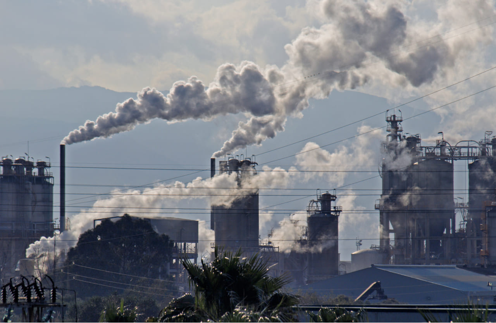

Gases De Efecto Invernadero
Información sobre los Gases De Efecto Invernadero
¿Que son los Gases De Efecto Invernadero?
Los Gases de Efecto Invernadero (GEI) son componentes gaseosos de la atmósfera, naturales y resultantes de la actividad humana, que absorben y emiten radiación infrarroja. Esta propiedad causa el efecto invernadero. La Convención Marco de las Naciones Unidas sobre el Cambio Climático reconoce seis: bióxido de carbono (CO2), metano (CH4), óxido nitroso (N2O), hidrofluorocarbonos (HFC), perfluorocarbonos (PFC) y hexafluoruro de azufre (SF6).
El cambio climático ocurre por una exacerbada acción del efecto invernadero, resultado del incremento de las concentraciones de los gases de efecto invernadero, es decir, de la cantidad y variedad de algunos de los gases que la componen.
